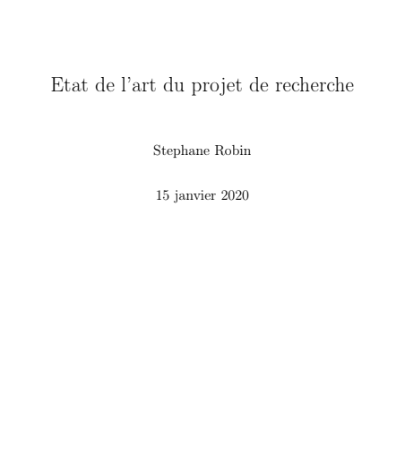

Ce projet aborde la modélisation d'un problème de contact sans frottement, en utilisant la méthode des éléments finis, une formulation variationnelle du problème, les méthodes de Newton et de pénalités. Les algorithmes et les solutions graphiques sont codés en Python. Ce procédé de modélisation est utilisé dans de nombreux domaines qui étudient les équations aux dérivées partielles, tels que la dynamique des fluides, l'électrostatique, la finance ou la biologie.
Computational modeling of a frictional contact problem using Finite Elements Method, variational formulation, penalty method and Newton’s method. The algorithms and graphic solutions are coded in Python. This modeling process is used in many areas represented by partial differential equations such as fluid dynamics, electrostatics, finance or biology.
Une bonne précision est souvent difficile à obtenir aux bornes d'un modèle. Cette étude aborde la représentation locale des fonctions harmoniques en utilisant la formule de Poisson et les espaces de Hardy. Les fonctions harmoniques se retrouvent fréquemment dans les transferts de chaleur, l'électrostatique, la mécanique quantique, la mécanique des fluides et la biologie.
Accuracy is often critical at the boundaries of a model. Here is a study of local representation of harmonic functions using Poisson Formula. Harmonic functions are common in heat transfer, electrostatics, quantum mechanics, fluid dynamics or biology.
crisprbuilder_tb est un package Python de bio-informatique capable de collectionner puis d'annoter les données de WFS concernant Mycobacterium tuberculosis, dans le but de permettre des investigations sur le CRISPR de la séquence étudiée. L'intégralité du package est disponible sur GitHub sous licence MIT.
Python package of bio-informatics collecting and annotating Mycobacterium tuberculosis WGS data for CRISPR investigations.
Cette étude est une analyse bio-informatique du locus CRISPR Cas dans Mycobacterium tuberculosis.
Bio-informatics analysis of the CRISPR Cas locus in Mycobacterium tuberculosis.
Cette étude reconstitue la CVE 2017-10991 concernant l'extension WP-Statistics 12.0.9 de WordPress lorsqu'on utilise le navigateur Mozilla Firefox.
CVE 2017-10991 concerns the WordPress plug-in WP-Statistics 12.0.9 when used with a Mozilla FireFox browser.